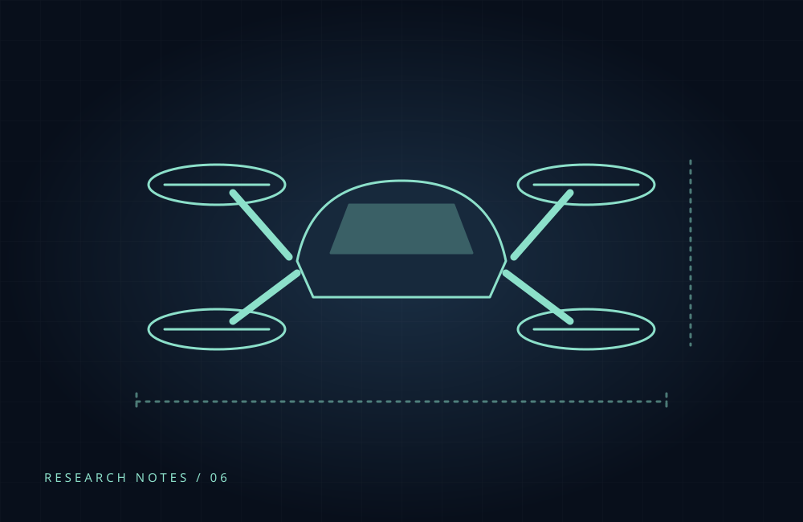

Transport Drone Concepts: Making an Idea Understandable
A design reflection on communicating autonomous transport concepts through imagery, informed by an ArtStation project reference.

A visual starting point
The supplied ArtStation project is titled Autonomous Transport Drone. Its detailed project description was not accessible when this post was prepared, so this article is a reflection on the topic rather than a review of the artist’s design.
What a concept image can communicate
An original transport concept can make an abstract service easier to discuss. A clear silhouette, an understandable passenger or cargo area and a recognizable setting give viewers concrete questions to explore.
Separate vision from validation
Visual clarity does not demonstrate flight performance or engineering readiness. Concept imagery is most useful when it invites discussion without presenting an imagined vehicle as a tested product.
The cover is an original illustrative diagram, not the referenced artwork or a depiction of a certified aircraft.